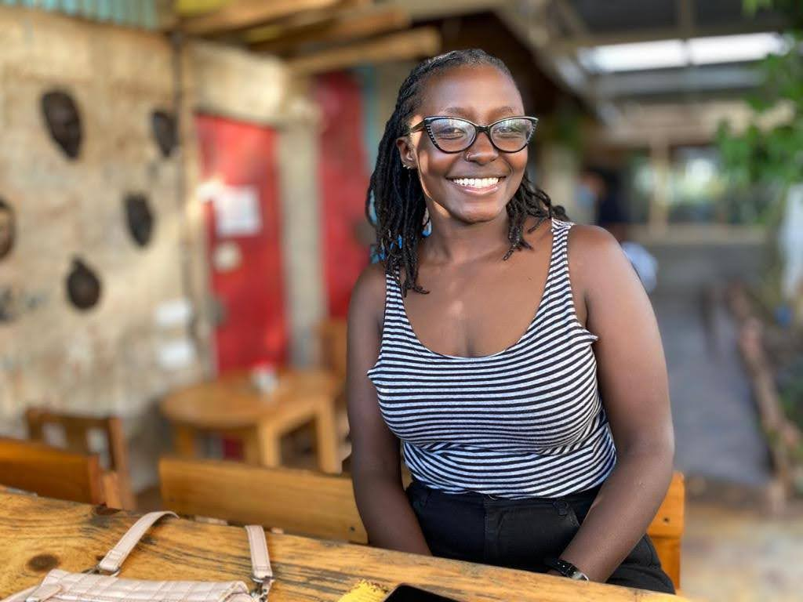

Samoina Mbuguah - Portfolio

Software Developer| Maternal Mental Health Advocate| Speaker| Fitness Enthusiast
About
Samoina is a budding software developer whose interest in the world of tech was something that bubled under the surface. Her foray into software development began a couple of years ago. After learning that she had suffered postpartum depression after her son's birth, Samoina wanted to make sure that as many mothers as possible knew about this mental health condition. She then began sharing her journey on the free Wordpress blog, adding candin and often raw accounts of her motherhood experience. Getting to write these blogs had her wondering what really happened on the back-end.
Enter McBooll, her brother-in-law and a self-taught developer. His commitment to learning and becoming a better software developer was the spark that ignited Samoina's interest in software development. A seemingly synchronous chain of events saw her awarded a scholarship to study at Moringa School here in Nairobi.Additionally, as a Postpartum Depression survivor, Samoina continues to create awareness through the non-profit she founded. She is also a fitness enthusiast and has maintained a workout routine for the past two years. She regularly shares her progress on her Instagram account.
Why Moringa School?
Moringa takes pride in helping people kick-start their career in tech by:
- Providing market-driven programs
- Creating a comprehensive learning system that includes lots of practical projects
- Including a Graduate Support Program to provide alumni with tools for future success in the tech industry
I wanted to be a part of this eco-system, so when a friend sent a tweet that Moringa was offering scholarships, I applied immediately. The online interview process was very straightforward, and that is how I am now undertaking the Prep Course for software development! :)
Educational background, skills and hobbies
My Educational background:
- Post-Graduate Certificate in Software Development: Moringa
- Perinatal Mental Health Certificate - Postpartum International (PSI)
- Bachelor's Degree in Biochemistry: JKUAT
- High School Diploma: Maryhill Girls' High School
My Skills:
- Basic software development skills
- Search Engine Optimization (SEO)
- Writing, Wordpress and Social media management
- Peer support in the maternal mental health field and through Postpartum Depression Kenya
- Community based organization (CBO)
My hobbies:
- Listening to podcasts(Have you listened to Adelle's Legally Clueless podcast?)
- I love travelling and meeting new people
- I love cooking too, and my favorite meal is pilau
- When I want to unwind, I will find a medical series like 'New Amsterdam' and binge on it!
Projects that I have created in the last one week
- This repository link is for my first website on Github. In it, I included a list of my favorite things, as well as a page about my pet Nala.
Languages used: HTML and CSS
- I then worked on this repo that includes the cookie recipe to be indented and spaced correctly. In it I edited the HTML page to ensure proper indentation and spacing before pushing to Github.
Languages used: HTML and CSS
- For this repo, my TM, Christine, guided us on Git branching and merging. I was to clone the repo first, then create a branch on it before adding any changes. Instead, I cloned, then worked on it before creating a branch. The work automatically saved on master branch and I couldn't push to branch. I repeated the process and that is what is on this repo.
Languages used: HTML and CSS
- I practised styling using div and span on this repository. This last one helped me understand CSS better and create my portfolio landing page.
Languages used: HTML and CSS